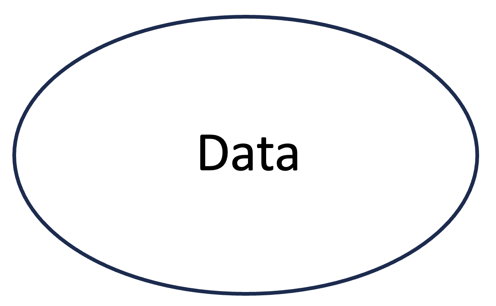
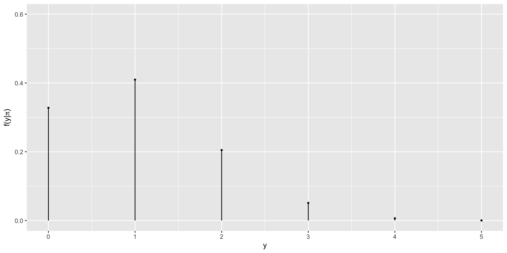
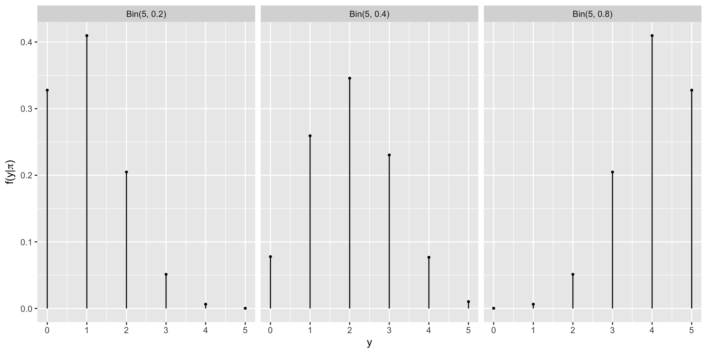
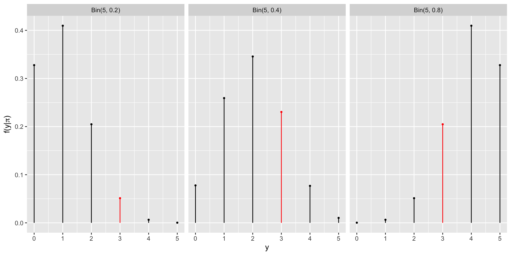

[1] 0.0064Intro to Bayesian Thinking
Day 1
Introduction to Bayesian Statistics
Bayesian Knowledge Building

Frequentist Knowledge Building
Balancing Act of Bayesian Analysis

Interpretation of Probability
Bayesian: a probability measures the relative plausibility of an event.
Frequentist: a probability measures the long-run relative frequency of a repeatable event. In fact, “frequentists” are so named because of their interpretation of probability as a long-run relative frequency.
Same Data, Different Priors
Kaya claims that they can predict the outcome of a coin flip. To test their claim, you flip a fair coin 10 times and they correctly predict all 10!
Fan claims that they can distinguish natural and artificial sweeteners. To test their claim, you give them 10 sweetener samples and they correctly identify each! In light of these experiments, what do you conclude?
You’re more confident in Fan’s claim than Kaya’s claim.
The evidence supporting Kaya’s claim is just as strong as the evidence supporting Fan’s claim.
Hypothesis Testing
Suppose that during a recent doctor’s visit, you tested positive for a very rare disease. If you only get to ask the doctor one question, which would it be?
- What’s the chance that I actually have the disease?
- If in fact I don’t have the disease, what’s the chance that I would’ve gotten this positive test result?
\(P(\text{disease} | +)\) is a mathematical expression of question (a), and \(P(+ | \text{disease}^c)\) expresses (b).
Notes on Bayesian History
Named after Thomas Bayes (1701-1761)
Frequentist statistics is more popular; Bayesian statistics is surging in popularity
Computing, computing, computing
It is harder to adopt to newer methods. Change is happening slowly.
We can embrace subjectivity.
Optional
Review of Probability
How Good is a Mammogram?
| Cancer | No Cancer | Total1 | |
|---|---|---|---|
| Mammo + | 85 | 990 | 1075 |
| Mammo - | 15 | 8910 | 8925 |
| Total | 100 | 9900 | 10000 |
Let \(A\) represent the event a mammogram is positive for breast cancer (Mammo +), and let \(B\) represent the event that a woman has cancer.
How Good is a Mammogram?
| Cancer | No Cancer | Total | |
|---|---|---|---|
| Mammo + | 85 | 990 | 1075 |
| Mammo - | 15 | 8910 | 8925 |
| Total | 100 | 9900 | 10000 |
\[P(\text{Cancer})= ~?\] \[P(\text{Cancer and Mammo +})= ~?\] \[P(\text{Cancer given Mammo +})= ~?\]
Calculate these probabilities and express them using the notation for events \(A\) and \(B\).
Marginal Probability
| Cancer | No Cancer | Total | |
|---|---|---|---|
| Mammo + | 85 | 990 | 1075 |
| Mammo - | 15 | 8910 | 8925 |
| Total | 100 | 9900 | 10000 |
\(P(\text{Cancer})= ~?\)
\(P(B) = \frac{100}{10000}= 0.01\)
\(P(B^C)\) is called complement of event \(B\) and represents the probability of selecting someone who does not have cancer.
\(P(B)\) represents a marginal probability. So do \(P(B^C)=1-P(B)\), \(P(A)\), and \(P(A^C)\). We can calculate these quantities using only the values in the margins of the contingency table.
Conditional Probability
| Cancer | No Cancer | Total | |
|---|---|---|---|
| Mammo + | 85 | 990 | 1075 |
| Mammo - | 15 | 8910 | 8925 |
| Total | 100 | 9900 | 10000 |
\(P(\text{Cancer given Mammo +})= ~?\)
\(P(B \mid A) = \frac{85}{1075}= 0.079\)
\(P(B \mid A)\) is a conditional probability. So are \(P(B^C \mid A)=1-P(B \mid A)\), \(P(B \mid A^C)\), \(P(B^c \mid A^C)\), \(P(A \mid B)\), etc. To calculate these probabilities, we focus on the row or column of the given information, reducing our sample space to that only of the given information. Note that \(P(B \mid A) \neq P(A \mid B)\) - order matters.
Joint Probability
| Cancer | No Cancer | Total | |
|---|---|---|---|
| Mammo + | 85 | 990 | 1075 |
| Mammo - | 15 | 8910 | 8925 |
| Total | 100 | 9900 | 10000 |
\(P(\text{Cancer and Mammo +})= ~?\)
\(P(B \cap A) = \frac{85}{10000}= 0.0085\)
\(P(B \cap A)\) represents a joint probability. So do \(P(B^C \cap A)\), \(P(B \cap A^C)\), etc.
Note that \(P(A \cap B)=P(B \cap A)\). Order does not matter here.
Bayes’ Rule for Events
Breast Cancer Screening
| Cancer | No Cancer | Total | |
|---|---|---|---|
| Mammo + | 85 | 990 | 1075 |
| Mammo - | 15 | 8910 | 8925 |
| Total | 100 | 9900 | 10000 |
Suppose a 40 year old woman, Maya, goes to a clinic for a screening mammogram. The prevalence of breast cancer among women in this age group is 1%. We can think of this as prior information about whether Maya has breast cancer.
Breast Cancer Screening
Maya has the screening mammogram and receives a positive finding. Taking this new data into account, which of the following describes your posterior understanding of the probability that Maya has breast cancer?
- These tests yield false positives all the time. Let’s see what happens at the next screening mammogram in a couple years.
- The chances Maya has cancer have risen, but it is still much more likely that she is cancer-free than that she has cancer. Still, she should follow the recommendation of the doctor for follow-up diagnostic testing so that she doesn’t miss the opportunity for early treatment just in case.
- The chances Maya has cancer are very high. She should have follow-up testing as soon as possible and start thinking about treatment.
The Prior Model
| Quantity | \(B\) | \(B^C\) | Sum |
|---|---|---|---|
| prior probability | 0.01 | 0.99 | 1 |
Likelihood
Let’s go back at the table and calculate the probability of a positive mammogram result (event \(A\)) in two cases: when a woman has cancer (event \(B\)), and when a woman does not have cancer (event \(B^C\)).
Likelihood Mammo + When Cancer is Present
| Cancer | No Cancer | Total | |
|---|---|---|---|
| Mammo + | 85 | 990 | 1075 |
| Mammo - | 15 | 8910 | 8925 |
| Total | 100 | 9900 | 10000 |
When a woman has cancer, we expect the screening mammogram to be positive with probability \(P(A \mid B)=\frac{85}{100}=0.85\). This quantity is also called the sensitivity of the mammogram. We like our tests to have high sensitivity, picking up most of the cancers that are present.
Likelihood Mammo + When Cancer is Not Present
| Cancer | No Cancer | Total | |
|---|---|---|---|
| Mammo + | 85 | 990 | 1075 |
| Mammo - | 15 | 8910 | 8925 |
| Total | 100 | 9900 | 10000 |
When a woman has no cancer, we expect the screening mammogram to be positive with probability \(P(A \mid B^C)=\frac{990}{9900}=0.10\). A related quantity, \(1-P(A \mid B^C)=P(A^C \mid B^C)=0.90\), is called the specificity of the mammogram. We also want specificity to be high, so that women without cancer are told they are cancer-free and do not need to go through additional follow up.
Likelihoods
We can call these quantities likelihoods, as they compare the likelihood of a positive mammogram under the two scenarios. Note \(L(\cdot \mid A)=P(A \mid \cdot)\) – somewhat confusing notation, but it is meant to indicate the likelihoods of two different unknown scenarios producing the data \(A\).
\(L(B \mid A)=0.85\)
\(L(B^C \mid A)=0.10\)
When a woman has breast cancer, we are much more likely to get the data of a positive mammogram than we are when a woman is cancer-free.
We can use the likelihood function to weigh the likelihoods of our data, a positive mammogram, under different cancer diagnosis scenarios. We can use it to update our probability that a person has cancer.
Likelihood
| Quantity | \(B\) | \(B^C\) | Sum |
|---|---|---|---|
| prior probability | 0.01 | 0.99 | 1 |
| likelihood | 0.85 | 0.10 | 0.95 |
Note the likelihood function is not a probability function, as it does not follow the law of total probability given by \(P(B)+P(B^C)=1\). It provides a framework to evaluate the relative compatibility of our data (here, the positive mammogram) with the events \(B\) and \(B^C\).
While the prior data suggests it is unlikely a 40 year old woman has breast cancer, the data provide evidence in favor of cancer diagnosis because \(L(B \mid A) > L(B^C \mid A)\). We can use Bayes’ rule to help us determine how likely a cancer diagnosis is given this evidence.
Bayes’ Rule
Bayes’ rule gives us a formal way to update our beliefs based on new infomration. It says \(P(B \mid A) = \frac{P(A \mid P(B)}{P(A)}=\frac{P(A \cap B)}{P(A)}.\) Using our likelihoods, we can express this as \[P(B \mid A) = \frac{P(B)L(B \mid A)}{P(A)}.\]
Maya would like to know her chances of having cancer. Several papers have shown that even doctors strongly overestimate her chances of having cancer given the positive mammogram finding.
Recall Law of Total Probability: \(P(A)=P(A \cap B) + P(A \cap B^C)\) or, equivalently, \(P(A)=P(A \mid B)P(B)+P(A \mid B^C)P(B^C)\).
Calculations
| Cancer | No Cancer | Total | |
|---|---|---|---|
| Mammo + | 85 | 990 | 1075 |
| Mammo - | 15 | 8910 | 8925 |
| Total | 100 | 9900 | 10000 |
\(P(B) = \frac{100}{10000} = 0.01\)
\(P(A \mid B) = \frac{85}{100} = 0.85\)
\(P(A \mid B^C) = \frac{990}{9900} = 0.10\)
\[P(B \mid A) = \frac{P(B)L(B \mid A)}{P(A \mid B)P(B)+P(A \mid B^C)P(B^C)}\]
\[P(B \mid A) = \frac{0.01 \times 0.85 }{0.85 \times 0.01 + 0.10 \times 0.99}=0.079\]
The Posterior Model
| Quantity | \(B\) | \(B^C\) | Sum |
|---|---|---|---|
| prior probability | 0.01 | 0.99 | 1 |
| likelihood | 0.85 | 0.10 | 0.95 |
| posterior probability | 0.079 | 0.921 | 1 |
Summary
\[P(B \mid A) = \frac{P(B)L(B \mid A)}{P(A)}\]
\[ \text{posterior} = \frac{\text{prior} \times \text{likelihood}}{\text{marginal probability}}\]
\[ \text{posterior} = \frac{\text{prior} \times \text{likelihood}}{\text{normalizing constant}}\]
Bayes’ Rule for Random Variables
Notation
We will use Greek letters (eg: \(\pi, \beta, \mu\)) to denote our primary variables of interest.
We will use capital Roman letters toward the end of the alphabet (eg: \(X, Y, Z\)) to denote random variables related to our data.
We denote an observed outcome of \(Y\) (a constant) using lower case \(y\).
Review: Discrete Probability Models
Let \(Y\) be a discrete random variable with probability mass function (pmf) \(f(y)\). Then the pmf defines the probability of any given \(y\), \(f(y) = P(Y = y)\), and has the following properties:
\(\sum_{\text{all } y} f(y) = 1\)
\(0 \le f(y) \le 1\) for all values of \(y\) in the range of \(Y\)
PhD Admissions
(Example from bayesrulesbook.com)
Let \(Y\) be a random variable that represents the number of applicants admitted to a PhD program that has received applications from 5 prospective students. That is, \(\Omega_Y = \{0, 1, 2, 3, 4, 5\}\). We are interested in the parameter \(\pi\), which represents the probability of acceptance to this program. For demonstrative purposes, we will only consider three possible values of \(\pi\): 0.2, 0.4, and 0.8.
Prior Model for \(\pi\)
You are now a true Bayesian and decide to consult with an expert who knows the specific PhD program well, and the following is the prior distribution the expert suggests you use in your analysis.
| \(\pi\) | 0.2 | 0.4 | 0.8 |
|---|---|---|---|
| \(f(\pi)\) | 0.7 | 0.2 | 0.1 |
The expert thinks that this is quite a hard-to-get-into program.
From Prior to Posterior
We have a prior model for \(\pi\) that is \(f(\pi)\).
In light of observed data \(y\), we can update our ideas about \(\pi\).
We will call this the posterior model \(f(\pi|y)\).
For this update, we will need data, which we have not yet observed.
Consider Data
For the two scenarios below fill out the table (twice). For now, it is OK to use your intuition to guesstimate.
| \(\pi\) | 0.2 | 0.4 | 0.8 | |
|---|---|---|---|---|
| \(f(\pi)\) | 0.7 | 0.2 | 0.1 | |
| Scenario 1 | \(f(\pi \mid y)\) | |||
| Scenario 2 | \(f(\pi \mid y)\) |
Scenario 1: What if this program accepted five of the five applicants?
Scenario 2: What if this program accepted none of the five applicants?
Intuition vs. Reality
Your intuition may not be Bayesian if - you have only relied on the prior model to decide on the posterior model. - you have only relied on the data to decide on the posterior model.
Bayesian statistics is a balancing act and we will take both the prior and the data to get to the posterior. Don’t worry if your intuition was wrong. As we practice more, you will learn to think like a Bayesian.
Likelihood
We do not know \(\pi\), but for now. let’s consider one of the three possibilities: \(\pi = 0.2\). If \(\pi\) were 0.2, what is the probability that we would observe 4 of the 5 applicants get admitted to the program? Would you expect this probability to be high or low?
Can you calculate an exact value?
The Binomial Model
Let random variable \(Y\) be the number of successes (eg: number of accepted applicants) in \(n\) trials (eg: applications). Assume that the number of trials is fixed, the trials are independent, and the probability of success (eg: probability of acceptance) in each trial is \(\pi\). Then the dependence of \(Y\) on \(\pi\) can be modeled by the Binomial model with parameters \(n\) and \(\pi\). In mathematical notation:
\[Y | \pi \sim \text{Bin}(n,\pi) \]
then, the Binomial model is specified by a conditional pmf:
\[f(y|\pi) = {n \choose y} \pi^y (1-\pi)^{n-y} \;\; \text{ for } y \in \{0,1,2,\ldots,n\}\]
The Binomial Model
\(f(y = 4 | \pi = 0.2) = {5 \choose 4} 0.2^40.8^1 = \frac{5!}{(5-4)! 4!} 0.2^40.8^1= 0.0064\)
or, using R,
The Binomial Model
If \(\pi\) were 0.2, what is the probability that we would observe 3 of the 5 applicants get admitted to the program? Would you expect this probability to be high or low?
\(f(x = 3 | \pi = 0.2) = {5 \choose 3} 0.2^30.8^2 = \frac{5!}{(5-3)! 3!} 0.2^30.8^2 =0.0512\)
or using R
The Binomial Model
Rather than doing this one-by-one we can let R consider all different possible observations of y, 0 through 5.
[1] 0.32768 0.40960 0.20480 0.05120 0.00640 0.00032Probabilities for \(y_i\)’s if \(\pi = 0.2\)
Other Possibilities for \(\pi\)
Data
The admissions committee has announced that they have accepted 3 of the 5 applicants.
Data
Likelihood

Likelihood
[1] 0.0512[1] 0.2304[1] 0.2048Likelihood
| \(\pi\) | 0.2 | 0.4 | 0.8 |
|---|---|---|---|
| \(L(\pi \mid y=3)\) | 0.0512 | 0.2304 | 0.2048 |
Likelihood
The likelihood function \(L(\pi|y=3)\) is the same as the conditional probability mass function \(f(y|\pi)\) at the observed value \(y = 3\).
Likelihood vs pmf
When \(\pi\) is known, the conditional pmf \(f(\cdot | \pi)\) allows us to compare the probabilities of different possible values of data \(Y\) (eg: \(y_1\) or \(y_2\)) occurring with \(\pi\):
\[f(y_1|\pi) \; \text{ vs } \; f(y_2|\pi) \; .\]
When \(Y=y\) is known, the likelihood function \(L(\cdot | y) = f(y | \cdot)\) allows us to compare the relative likelihoods of different possible values of \(\pi\) (eg: \(\pi_1\) or \(\pi_2\)) given that we observed data \(y\):
\[L(\pi_1|y) \; \text{ vs } \; L(\pi_2|y) \; .\]
Getting Closer to Conclusion
The expert assigned the highest weight to \(\pi = 0.2\).
However the data \(y = 3\) suggests that \(\pi = 0.4\) is more likely.
We will continue to consider all the possible values of \(\pi\).
Now is a good time to balance the prior and the likelihood.
From Events to Random Variables
\(\text{posterior} = \frac{\text{prior} \times \text{likelihood}}{\text{marginal probability of data}}\)
\(\text{posterior} = \frac{\text{prior} \times \text{likelihood}}{f(y = 3)}\)
\(\text{posterior} = \frac{\text{prior} \times \text{likelihood}}{f(y = 3 \cap \pi = 0.2) + f(y = 3 \cap \pi = 0.4) + f(y = 3 \cap \pi = 0.8)}\)
\(\text{posterior} = \frac{\text{prior} \times \text{likelihood}}{f(y = 3 | \pi = 0.2) \cdot (\pi = 0.2) + f(y = 3 | \pi = 0.4) \cdot (\pi = 0.4) + f(y = 3 | \pi = 0.8) \cdot (\pi = 0.8)}\)
Normalizing Constant
\(\text{posterior} = \frac{\text{prior} \times \text{likelihood}}{f(y = 3 | \pi = 0.2) \cdot (\pi = 0.2) + f(y = 3 | \pi = 0.4) \cdot (\pi = 0.4) + f(y = 3 | \pi = 0.8) \cdot (\pi = 0.8)}\)
Thus \(f(y = 3) =\)
[1] 0.1024Posterior
| \(\pi\) | 0.2 | 0.4 | 0.8 |
|---|---|---|---|
| \(f(\pi)\) | 0.7 | 0.2 | 0.1 |
| \(L(\pi \mid y=3)\) | 0.0512 | 0.2304 | 0.2048 |
| \(f(\pi \mid y=3)\) | 0.35 | 0.45 |
\(f(\pi=0.8 | y = 3) = \frac{f(\pi)L(\pi|y =3)}{f(y = 3)}\)
\(= \frac{0.1 \times 0.2048}{0.1024}\)
\(= 0.2\)
Posterior
| \(\pi\) | 0.2 | 0.4 | 0.8 |
|---|---|---|---|
| \(f(\pi)\) | 0.7 | 0.2 | 0.1 |
| \(L(\pi \mid y=3)\) | 0.0512 | 0.2304 | 0.2048 |
| \(f(\pi \mid y=3)\) | 0.35 | 0.45 | 0.20 |
Why is Normalizing Constant a “Normalizing Constant”?
\(f(\pi=0.2 | y = 3) = \frac{f(\pi)L(\pi|y =3)}{f(y = 3)}\)
\(= \frac{0.7 \times 0.0512}{0.1024}\)
\(f(\pi=0.4 | y = 3) = \frac{f(\pi)L(\pi|y =3)}{f(y = 3)}\)
\(= \frac{0.2 \times 0.2304}{0.1024}\)
\(f(\pi=0.8 | y = 3) = \frac{f(\pi)L(\pi|y =3)}{f(y = 3)}\)
\(= \frac{0.1 \times 0.2048}{0.1024}\)
Why is Normalizing Constant a “Normalizing Constant”?
Here, our normalizing constant is 0.1024.
\(f(\pi=0.2 | y = 3) = \frac{f(\pi)L(\pi|y =3)}{f(y = 3)}\)
\(= \frac{0.7 \times 0.0512}{0.1024}\)
\(\propto {0.7 \times 0.0512}\)
\(f(\pi=0.4 | y = 3) = \frac{f(\pi)L(\pi|y =3)}{f(y = 3)}\)
\(= \frac{0.2 \times 0.2304}{0.1024}\)
\(\propto {0.2 \times 0.2304}\)
\(f(\pi=0.8 | y = 3) = \frac{f(\pi)L(\pi|y =3)}{f(y = 3)}\)
\(= \frac{0.1 \times 0.2048}{0.1024}\)
\(\propto {0.1 \times 0.2048}\)
Without the normalizing constant, the sum of these probabilities is \(0.7 \times 0.0512 + 0.2 \times 0.2304 + 0.1 \times 0.2048 = 0.1024\). With division by the normalizing constant the resulting probabilities sum to 1, as needed for a probability distribution.
Why is Normalizing Constant a “Normalizing Constant”?
\[f(\pi|y) \propto f(\pi)L(\pi|y)\]
In Summary
Every Bayesian analysis consists of three common steps.
1.Construct a prior model for your variable of interest, \(\pi\).
A prior model specifies two important pieces of information: the possible values of \(\pi\) and the relative prior plausibility of each.
2.Upon observing data \(Y = y\), define the likelihood function \(L(\pi|y)\).
As a first step, we summarize the dependence of \(Y\) on \(\pi\) via a conditional pmf \(f(y|\pi)\). The likelihood function is then defined by \(L(\pi|y) = f(y|\pi)\) and can be used to compare the relative likelihood of different \(\pi\) values in light of data \(Y = y\).
In Summary
3.Build the posterior model of \(\pi\) via Bayes’ Rule.
By Bayes’ Rule, the posterior model is constructed by balancing the prior and likelihood:
\[\text{posterior} = \frac{\text{prior} \cdot \text{likelihood}}{\text{normalizing constant}} \propto \text{prior} \cdot \text{likelihood}\] More technically,
\[f(\pi|y) = \frac{f(\pi)L(\pi|y)}{f(y)} \propto f(\pi)L(\pi|y)\]